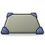
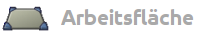
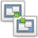
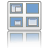
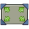
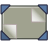
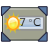
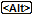

CCSM Arbeitsfläche
Dieser Artikel wurde für die folgenden Ubuntu-Versionen getestet:
Ubuntu 16.04 Xenial Xerus
Artikel für fortgeschrittene Anwender
Dieser Artikel erfordert mehr Erfahrung im Umgang mit Linux und ist daher nur für fortgeschrittene Benutzer gedacht.
Zum Verständnis dieses Artikels sind folgende Seiten hilfreich:
 Der CompizConfig Einstellungs-Manager (abgeleitet aus der Paketbezeichnung nachfolgend "CCSM" abgekürzt) bietet umfangreiche Möglichkeiten, das Verhalten auf dem Bildschirm, das Aussehen diverser Komponenten sowie die Eingriffe durch die Tastatur und die Maus einzustellen. Dieser Abschnitt behandelt schwerpunktmäßig das Desktop mit seinen Arbeitsflächen.
Dieser Abschnitt behandelt die unter dem Thema "Arbeitsfläche" im Startbildschirm vom CCSM zusammengefassten Einstellungen. Mit diesen Einstellungen werden schwerpunktmäßig das Desktop mit seinen Arbeitsflächen bearbeitet/eingestellt.
Optionen Arbeitsfläche¶
Nachfolgend ist eine Übersicht aller Beschreibungen aufgeführt, die sich mit dem Thema "Arbeitsfläche" befassen. Durch Anklicken des jeweiligen Icons bzw. des Titels gelangt man zur jeweiligen Detailbeschreibung.
Standard-Optionen¶
|  | |||||
|  | Ausgabe klonen | Desktoptafel |  | Expo-Funktion | |
| Desktop Würfel | Würfel drehen | Desktop umschalten | |||
| Ubuntu Unity Plugin | |||||
Zusatz-Optionen¶
|  | Desktop einblenden |  | Zeige Desktop |  | Widget Behandlung |
Diese Zusatz-Optionen sind erst verfügbar nach der Installation des Paketes:
compiz-fusion-plugins-extra (universe, [1])
 mit apturl
mit apturl
Paketliste zum Kopieren:
sudo apt-get install compiz-fusion-plugins-extra
sudo aptitude install compiz-fusion-plugins-extra
installiert sein.
Beschreibungen unter Arbeitsfläche¶
Ab Natty Narwhal wurde die Aufteilung innerhalb dieses Abschnittes um einige Aspekt ergänzt. Dieses wurde wegen der Doppelfunktion zwischen Ubuntu (Ubuntu-Classic) auf der einen Seite und Unity auf der anderen erforderlich. Des Weiteren muss man diese zwei Definitionen beachten:
Desktoptafel = Der gesamte Desktop, gebildet aus der Summe der Arbeitsflächen
Arbeitsfläche = Eine Fläche, auf der man normalerweise arbeitet und auf der die Fenster abgelegt sind.
Die Symbole für "Typ" in den Erläuterungen haben folgende Bedeutung:
 = Auswahl/Wechsel erfolgt durch Anklicken
= Auswahl/Wechsel erfolgt durch Anklicken = Einstellung der Tasten erfolgt in einer Auswahlbox
 = Auswahl wird in einem "DropDown" vorgegeben
= Auswahl wird in einem "DropDown" vorgegeben = Einstellung erfolgt über einen "Schieber"
= Einstellung erfolgt über einen "Schieber" = steht für die Eingabe eines zulässigen Textes
= steht für die Eingabe eines zulässigen Textes
Ausgabe klonen¶
| Funktion | Initiieren | Beschreibung |
| "Clone Output" | Klont das Bild eines Monitors auf einen anderen. Das Plugin eignet sich für Anwender, die mit mehreren Bildschirmen arbeiten und auf beiden Bildschirmen kurzzeitig das selbe Bild haben wollen. Drückt man
⇧ +
Windows +  , minimiert sich das Bild von Monitor A, dieses zieht man auf Monitor B und löst die Maustaste. Nun sieht man auf beiden Monitoren das gleiche Bild. , minimiert sich das Bild von Monitor A, dieses zieht man auf Monitor B und löst die Maustaste. Nun sieht man auf beiden Monitoren das gleiche Bild. |
Desktoptafel¶
Die Umschaltung der Arbeitsflächen erfolgt in der Standardeinstellung mit der Tastenkombination Strg + Alt zusammen mit einer der Pfeiltasten → / ← / ↓ / ↑ . Diese Einstellungen können von den allgemeinen Menü-Einstellungen ("System -> Einstellungen -> Tastenkombination") überschrieben werden bzw. auch unter Expo geregelt sein.
Hinweis:
Es kann vorkommen, dass keine Reaktion erfolgt. Das ist damit begründet, dass mit der benutzen Pfeiltaste diese Richtung zum Umschalten nicht mehr zur Verfügung steht, weil die aktive Arbeitsfläche bereits in dieser Richtung angeordnet ist. Dazu muss erst die Option "Allow Wrap-Around" zugeschaltet sein.
Arbeitsflächen-Umschaltung Vorschau¶
| Funktion | Typ | Beschreibung |
| "Show Viewport Switcher Preview" | | "Vorschau im Miniformat": Zeige bei Umschaltung eine verkleinerte Vorschau/Übersicht der Arbeitsflächen und die zuletzt gewählte Umschaltrichtung an. |
| "Show Live Viewport Previews" | | "Vorschau mit Arbeitsflächeninhalt": Zeige in der Vorschau/Übersicht den Inhalt der Arbeitsflächen an. |
| "Switch Target Preview Visibility Time" | | "Anzeigezeit der Vorschaubilder": Hiermit wird die Zeit eingestellt, die die Vorschau / Übersicht nach dem Loslassen der Tastenkombination noch zu sehen ist. Standardeinstellung = 0,2000 sek |
| "Preview Scale" | | "Größe der Vorschau": Hiermit wird die Größe der Vorschau/Übersicht eingestellt. Standardeinstellung = 130 (je Vorschaubild 13% der Arbeitsfläche) |
| "Edge Radius" | | "Kantenabrundung der Vorschau": Hiermit werden die Abrundungen an der Vorschaumaske eingestellt. Standardeinstellung = 5 Pixel |
| "Border Width" | | "Rahmenbreite": Hiermit wird die Rahmenbreite der Vorschaumaske eingestellt. Standardeinstellung = 7 Pixel |
| "Outline Color" | | "Randfarbe der Vorschau": Hiermit wird die Farbe für die Umrandung der Vorschau/Übersicht eingestellt. Die Auswahl erfolgt in einer Farbschema-Maske. |
| "Diverse Farbparameter" | | Es können noch diverse Feineinstellungen für die Vorschaubilder und deren Umfeld vorgenommen werden. |
Verhalten Vorschau bei Umschaltung¶
| Funktion | Typ | Beschreibung |
| "Allow Wrap-Around" | | Mit der Aktivierung dieser Funktion kann man die Umschaltung der Arbeitsflächen auch über das eine Ende der Desktoptafel hinaus zum anderen Ende hin direkt umschalten. |
| "Wall Sliding Duration" | | "Gleitgeschwindigkeit" der Vorschau / Übersicht auf der Desktoptafel. Standardeinstellung = 0,3000 sek |
| "Non Sliding Windows" | | Eine Liste mit den Fenstern, die nicht mitgleiten sollen bzw. von der Umschaltung ausgeschlossen werden sollen |
| "Multimonitor behaviour" | | "Verhalten mehrere Ausgabegeräte": Hiermit kann das Verhalten eingestellt werden, was mit der Darstellung passieren soll, wenn mehrere Ausgabegeräte angeschlossen (und aktiv) sind. Einstellungen sind: "Schalte alle gemeinsam", "Schalte einzeln/seperat" |
Tastatur-Maus-Einstellungen¶
Unter dem Reiter "Bindings" werden die Einstellungen der Tastatur, der Maus und auch der Berührung der Bildschirmränder mit der Maus vorgenommen. Die Option "Umschaltung beim Verlassen" ("Edge Flipping") ist unter dem Unity-Desktop nicht einsetzbar (intern deaktiviert). Die Aktivierung dieser Einstellung für die Ubuntu- / Ubuntu-Classic-Desktops muss dann noch unter dem Reiter "Edge Flipping" erfolgen.
Umschaltung beim Verlassen¶
| Funktion | Typ | Beschreibung |
| "Edge Flip Pointer" | | "Umschaltung mit Mauszeiger": Wenn diese Option aktiviert wurde, schaltet die Arbeitsfläche auf die daneben liegende Arbeitsfläche um, sobald der Mauszeiger den Rand der Arbeitsfläche berührt. Je nach Anordnung der Arbeitsflächen ist auch ein Umschalten nach unten/oben möglich. |
| "Edge Flip Move" | | "Umschaltung mit Fenster": Wenn diese Option aktiviert wurde, schaltet die Arbeitsfläche auf die daneben liegende Arbeitsfläche um, sobald ein Fenster über den Rand der Arbeitsfläche verschoben wird. Relevant ist die Position des Mauszeigers, der das Fenster mit gedrückter -Taste zum Verschieben ergriffen hat. |
| "Edge Flip DND" | | "Umschaltung mit Objekt": Wenn diese Option aktiviert wurde, schaltet die Arbeitsfläche auf die daneben liegende Arbeitsfläche um, sobald ein "Objekt" (z.B.: ein Ordner) über den Rand der Arbeitsfläche verschoben wird |
Expo-Funktion¶
Expo Tastenkombination¶
| Funktion | Typ | Beschreibung |
| "Expo key" | "Expo Tasten": Einstellung der Tastenkombination zum Einleiten der Umschaltung der Arbeitsflächen. Die Einstellung erfolgt in einer Auswahlbox. | |
| Standardeinstellung = Windows + S | ||
| "Expo Button" | "Expo Mausknopf: Hier kann man die Maustaste (oder eine Kombination mit der Tastatur) einstellen, die zum Einleiten der Umschaltung der Arbeitsflächen aufruft. Die Einstellung erfolgt in einer Auswahlbox. Standardeinstellung = "Deaktiviert" | |
| "Expo edge" | "Expo Bildschirmrand": Hiermit kann man den Bildschirmrand vorgeben, der bei Berührung mit dem Mauszeiger, die Umschaltung der Arbeitsflächen aufruft. Erneutes Berühren schließt die Desktoptafel. Die Einstellung erfolgt in einer Auswahlbox. Standardeinstellung = "Nichts" | |
| "Double click time" | | "Doppelklick auf Auswahl": Hiermit kann die Zeit für einen Doppelklick auf die auszuwählende Arbeitsfläche eingestellt werden, um mit dieser in den Vollbildmodus zurück zu kehren. Standardwert = 500 msek |
| "Drag&drop" | "Mit Mausknopf ziehen": hiermit wird eingestellt, mit welchem Mausknopf ein Fenster zwischen den gezoomten Arbeitsflächen verschoben werden kann. Die Einstellung erfolgt in einer Auswahlbox. Standardeinstellung = | |
| "Exit expo" | "Expofunktion verlassen": Hiermit kann man eine Maustaste dazu benutzen, wieder in den Vollbildmodus zurück zu wechseln. Gleichzeitig kann diese Maustaste dabei zur direkten Auswahl einer Arbeitsfläche benutzt. Die Einstellung erfolgt in einer Auswahlbox. Standardeinstellung =  | |
| "Nächste Arbeitsfläche" | "Nächste Ansicht aufrufen": Mit der Einstellung einer Tastenkombination kann man zwischen den verkleinerten Arbeitsflächen schalten. Die Einstellung erfolgt in einer Auswahlbox. Standardeinstellung = Maustaste 4 | |
| "Vorherige Arbeitsfläche" | "Vorherige Ansicht aufrufen": Mit der Einstellung einer Tastenkombination kann man zwischen den verkleinerten Arbeitsflächen schalten. Die Einstellung erfolgt in einer Auswahlbox. Standardeinstellung = Maustaste 5 |
Expo Verhalten¶
| Funktion | Typ | Beschreibung |
| "Zoom time" | | "Expo-Geschwindigkeit": Einstellung der Dauer beim Einleiten der Umschaltung der Arbeitsflächen. Standardwert = 0,3000 sek |
| "Immediate moves" | | "Sofortiges Zoomen": Hiermit wird erreicht, das das Zoomen ohne Zeitverzögerung erfolgt. Hat aber den Nachteil, das andere Funktionen abgeschaltet werden müssen (z.B. wackelige Fenster). |
| "Expo Animation" | | "Darstellung beim Umschalten": Hiermit wird die Art und Weise eingestellt, wie das Vollbild verlassen wird bzw. wie diese wieder zurück kehrt. Folgende Vorgaben sind in einer Auswahlbox auswählbar: "Nur Zoomen", "Ausblenden & Zoomen", "Verwirbelung" |
Expo Aussehen¶
Hierunter fallen zusätzliche Parameter, mit denen man das Verhalten und die Darstellung der Expo-Funktion beeinflussen kann.
Einfluss auf die Funktion¶
| Funktion | Typ | Beschreibung |
| "Deformation" | | "Verformung": Hiermit kann man einstellen, wie die Arbeitsflächen auf der Desktoptafel angeordnet werden sollen. Folgende Vorgaben sind in einer Auswahlbox auswählbar: "Keine", Nach hinten "Abgeschrägt", Nach hinten "Gekrümmt" |
| "Distance" | | "Entfernung": Hiermit kann man den optischen Effekt einer tieferen Entfernung einstellen. Standardwert = 0 |
| "Viewport distance" | | "Abstand Arbeitsflächen": Hiermit kann man einen freien Raum zwischen den gezoomten Arbeitsflächen auf der Desktoptafel einstellen. Standardwert = 0,8000 |
| "Aspct Ratio" | | "Seitenverhältnis": Hiermit kann man das Seitenverhältnis der Desktoptafel beeinflussen. Standardwert = 1,0000 |
| "Curve strength" | | "Stärke der Krümmung": Hiermit kann man die Krümmung für den Modus "Gekrümmt" einstellen. Standardwert = 0,4000 |
| "Hide panels/docks in expo" | | "Ausblenden": Nicht mehr wirksam ab Natty Narwhal (???), hiermit kann man während der Expo-Funktion die Desktop-Panels und "Docks/Widgets" ausblenden. |
| "Mipmaps" | | "Mipmaps benutzen": Hiermit kann man bestimmen, dass zur Verbesserung der Darstellung Mipmaps benutzt werden sollen |
| "Multi Output Mode" | | Hiermit kann man bestimmen, wie bei mehreren Ausgabegeräten verfahren werden soll. Dazu kann man wählen zwischen: "eine" große Desktoptafel über alle Ausgabegeräte, "je Ausgabegerät" eine Desktoptafel |
Inaktive Arbeitsflächen¶
| Funktion | Typ | Beschreibung |
| "Brightness" | | "Helligkeit": Hiermit kann man die Helligkeit der nicht aktiven Arbeitsflächen im gezoomten Zustand abdimmen. Der Standardwert = 80 % |
| "Saturation" | | "Farbsättigung": Hiermit kann man die Farbsättigung der nicht aktiven Arbeitsflächen im gezoomten Zustand reduzieren. Der Standardwert = 100 %, entspricht volle Farbe bis zu 0 %, entspricht keine Farbe |
Reflektion¶
| Funktion | Typ | Beschreibung |
| "Reflection" | | "Reflektionen": Hiermit kann man eine Reflektion der gezoomten Arbeitsflächen auf den Hintergrund der Desktoptafel einstellen. Die Darstellung wird dabei je nach Einstellung angepasst! |
| "Ground color (near)" | | "Hintergrundfarbe Nahbereich": Hier kann man in einer Farb-Auswahlbox eine Farbe und deren Paraneter bestimmen. |
| "Ground color (far)" | | "Hintergrundfarbe Fernbereich": Hier kann man in einer Farb-Auswahlbox eine Farbe und deren Paraneter bestimmen. |
| "Reflection ground size" | | "Reflektion am Boden": Hiermit kann man die Größe des Bodenbereiches bestimmen. Standardwert = 0,5000 |
| "Reflection Scale" | | "Stärke der Reflektion": Hier kann man die Stärke der Reflektion am Boden einstellen. Einstellungen von 0,000 über "1,0000" bis 2,0000 |
Desktop Würfel¶
Für den "Statischen Würfel" wird das Wechseln durch Aufklappen der Arbeitsflächen in einer Reihe geregelt. Dazu gibt es diverse Einstellungen. Damit eine sinnvolle Darstellung erfolgen kann, sollte man die Arbeitsflächen in einer Reihe anordnen -> Desktop-Größe = 4:1:1.
Desktop Würfel Allgemein¶
| Funktion | Typ | Beschreibung |
| "Auffalten" | Hiermit wird festgelegt, mit welcher Tastenkombination die Umschaltung eingeleitet wird. Die Einstellung erfolgt in einer Auswahlbox - Standardeinstellung = Strg + Alt + ↓ | |
| "Nächste Arbeitsfläche" | Die Einstellung erfolgt in einer Auswahlbox - Standardeinstellung = "Deaktiviert". Diese Funktion ist ab Natty Narwhal nicht mehr vorhanden, weil diese Einstellungen von den allgemeinen Menü-Einstellungen ("System -> Einstellungen -> Tastenkombination") überschrieben wurden bzw. unter Expo geregelt werden. | |
| "Vorherige Arbeitsfläche" | Die Einstellung erfolgt in einer Auswahlbox - Standardeinstellung = "Deaktiviert". Diese Funktion ist ab Natty Narwhal nicht mehr vorhanden, weil diese Einstellungen von den allgemeinen Menü-Einstellungen ("System -> Einstellungen -> Tastenkombination") überschrieben wurden bzw. unter Expo geregelt werden. | |
| "Mipmaps" | | Hiermit wird festgelegt, dass für eine bessere Darstellung Mipmap-Verfahren bei der Skalierung angewendet werden sollen. |
| "Modus für Mehrfachausgabe" | | Hiermit kann man auswählen, wie der Würfel angezeigt werden soll, wenn mehrere Ausgabegeräte angeschlossen sind. Die Einstellungen sind: "Automatisch", "Mehrere Würfel", "Ein großer Würfel". |
| Die Einstellungen sind außerdem abhängig von den Menü-Einstellungen unter "System -> Einstellungen -> Bildschirme" -> bei "Gleiches Bild auf allen Bildschirmen". |
Desktop Würfel Verhalten¶
| Funktion | Typ | Beschreibung |
| "In Würfel" | | Hiermit kann man den Aspekt der Betrachtung einstellen. Nicht aktiviert entspricht einer Betrachtung von Außen auf den Würfel. Wird diese Option aktiviert, ist die Betrachtung vom innenliegenden Zentrum des Würfels. |
| "Beschleunigung" | | Hiermit wird die "Beschleunigung" beim Auf- bzw. Zufalten des Würfels eingestellt. Der Standardwert = 4,0000 |
| "Geschwindigkeit" | | Hiermit wird die "Geschwindigkeit" beim Auf- bzw. Zufalten des Würfels eingestellt. Der Standardwert = 1,5000 |
| "Zeitintervall" | | Hiermit wird die Zeit eingestellt, in der beim Auf- bzw. Zufalten des Würfels eine Neuberechnung erolgen soll. Der Standardwert = 1,2000 |
Desktop Würfel Erscheinung¶
Man kann Einstellungen vornehmen in den getrennten Abschnitten
"Cube Cap Color" (Würfel Kappen Farbe)
"Skydome" (Hintergrund hinter dem Würfel)
| Funktion | Typ | Beschreibung |
| "Top" | | "Obere Kappe": Hiermit wird eine Farbe für die obere Fläche des Würfels ausgesucht und bestimmt. |
| "Bottom" | | "Untere Kappe": Hiermit wird eine Farbe für die untere Fläche des Würfels ausgesucht und bestimmt. |
| "Skydome" | | Hiermit wird die Funktion als solche aktiviert. |
| "Skydome-Bild" | | Hier kann man mittels einer Ordner-Suchfunktion bzw. durch direkte Pfad und Bildangabe einen Hintergrund für den Würfel bestimmen. |
| "Skydome animieren" | | Hiermit kann man festlegen, dass beim Verschieben der aufgeklappten Arbeitsflächen sich auch der Hintergrund dazu gegenläufig bewegt. |
| "Anfangsfarbe" | | "Anfangsfarbe für den Skydome-Verlauf". Hiermit kann man sich eine Farbe aussuchen, die am oberen Ende des Himmels beginnt. Die Einstellung erfolgt in einer Farbauswahlmaske. |
| "Endfarbe" | | "Endfarbe für den Skydome-Verlauf". Hiermit kann man sich eine Farbe aussuchen, mit der der Himmel unten endet. Die Einstellung erfolgt in einer Farbauswahlmaske. |
Desktop Transparenter Würfel¶
| Funktion | Typ | Beschreibung |
| "Transparenz beim Drehung" | | Hiermit wird die Transparenz (Durchsichtigkeit der Arbeitsflächen) des Würfels während der Drehung eingestellt. Diese Option ist nur im Zusammenhang mit der Option Würfel drehen sinnvoll einsetzbar. |
| "Transparenz im Stillstand" | | Hiermit wird die Transparenz (Durchsichtigkeit der Arbeitsflächen) des Würfels, sowohl im Zustand Würfel als auch aufgeklappt eingestellt. |
| "Maus-Rotation" | | Hiermit wird festgelegt, dass nur bei einer Drehung des Würfels mit der Maus, dieser auch transparent wird. Diese Option ist nur im Zusammenhang mit der Option Würfel drehen sinnvoll einsetzbar. |
Desktop-Würfel drehen¶
Für den "drehbaren Würfel" wird das Wechseln der Arbeitsflächen durch eine Drehung des gesamten Würfels mitsamt seiner Arbeitsflächen geregelt. Dazu gibt es diverse Einstellungen. Damit eine sinnvolle Darstellung erfolgen kann, sollte man die Arbeitsflächen in einer Reihe anordnen -> Desktop-Größe = 4:1:1.
Würfel drehen Allgemein¶
| Funktion | Typ | Beschreibung |
| "Am Rand wechseln" | | "Am Rand wechseln (mit Mauszeiger)": Hiermit kann man festlegen, dass der Würfel sich zu der Arbeitsfläche sich dreht, die hinter dem Rand liegt, an die der Mauszeiger anstößt. |
| "Am Rand wechseln" | | "Am Rand wechseln (Fenster am Rand)": Der Würfel wird gedreht, wenn man ein Fenster an den Rand einer Arbeitsfläche bringt. |
| "Am Rand wechseln" | | "Am Rand wechseln (beim Ziehen und Ablegen eines Fensters)": Der Würfel wird zur nächsten Arbeitsfläche gedreht, wenn ein Fenster von einer Arbeitsfläche auf die andere gezogen und dort abgelegt wird. |
| "Während des Drehen anheben" | | |
| "Y-Umkehrung für Mauszeiger" | | Es wird beim Drehen die Richtung des Mauszeigers in horizontaler Richtung umgedreht. Damit kippt der Würfel nach hinten weg, während man die Maus zu sich hin zieht. |
| "An Oberseite einrasten" | | Der Würfel rastet bei Drehung an der oberen Desktopkante ein. |
| "An Unterseite einrasten" | | Der Würfel rastet bei Drehung an der unteren Desktopkante ein. |
| "Zoom" | | Der Würfel wird bei Drehung auf ein einstellbares Verhältnis (Desktop zu Arbeitsfläche) verkleinert. |
| "Wechselzeit" | | Es kann eine Verzögerung eingestellt werden, bevor der Würfel anfängt, sich zu drehen. Diese ist nur sinnvoll für eine Drehung einsetztbar, die durch eine Tastenkombination ausgelöst wird. Standardwert = 350 msek |
| "Zeigerempfindlichkeit" | | Hiermit wird ein Schwellwert für den Mauszeiger bei der Option "Am Rand wechseln" eingestellt. Standardwert = 1,0000 (normal) - größerer Wert reagiert später. |
| "Beschleunigung" | | Hiermit kann die "Beschleunigung" zur Drehung des Würfels nach Initialisierung mit einer Tastenkombination eingestellt werden. Standardwert = 4,0000 |
| "Geschwindigkeit" | | Hiermit kann die "Geschwindigkeit" bei der Drehung des Würfels nach Initialisierung mit einer Tastenkombination eingestellt werden. Standardwert = 2,0000 |
| "Zeitintervall" | | Hiermit kann das "Zeitintervall" bei der Drehung des Würfels eingestellt werden, mit der eine Neuberechnung erfolgen soll. Standardwert = 1,0000 |
Würfel drehen Maus-Tastenkombination¶
Unter diesem Reiter können Einstellungen vorgenommen werden für die Würfel-Zustände
"Würfel rotieren"
"Initiieren"
diverse Optionen bzw. Vorgaben
"Rotate to cube face" (direktes Drehen zu einer bestimmten Arbeitsfläche)
diverse Vorgaben hinsichtlich einer Arbeitsfläche
"Rotate to cube face with window" (wie oben, zusammen mit aktivem Fenster)
diverse Vorgaben hinsichtlich einer Arbeitsfläche
Desktop umschalten¶
| Funktion | Details | Beschreibung |
| "Arbeitsflächenumschalter" | Arbeitsflächenumschalter  | Dient dazu, den virtuellen Desktop über eine Tastenkombination oder eine Mausaktion wechseln zu können. In den Standardeinstellungen kann man mit dem Mausrad den Desktop wechseln, während sich der Mauszeiger über dem Desktop befindet. |
Ubuntu Unity Plugin¶
Unity Verhalten¶
| Funktion | Typ | Beschreibung |
| "Reveal Mode" | "Modus zum Hervorholen": Hiermit wird festgelegt, zu welchem Bildschirmrand der Mauszeiger geführt werden muss, damit das "ausgewichene" Startmenü wieder sichtbar gemacht werden kann. Die Einstellung erfolgt in einer Auswahlbox. Standardeinstellung = "links" (andere Einstellungen sind zwar möglich, aber nicht sinnvoll!) | |
| "Hide Launcher" | | "Einstellung Autohide": Hier kann man die Aktion einstellen, worauf das Startmenü reagieren soll, damit es aus dem sichtbaren Bildschirm heraus genommen wird. Folgende Vorgaben sind auswählbar: "Niemals", "Autohide", "Fenster ausweichen", "aktivem Fenster ausweichen" |
| "Key to show the launcher" | "Taste zum Sichtbarmachen": Hiermit wird festgelegt, mit welcher Tasten-(Kombination) das "ausgewichene" Startmenü wieder sichtbar gemacht werden kann. Die Einstellung erfolgt in einer Auswahlbox. Standardeinstellung = Windows "gedrückt halten" | |
| "Key to put keyboard-focus on launcher" | "Startmenü aufrufen": Hiermit wird festgelegt, mit welcher Tasten-(Kombination) die oberste Anwendung im Startmenü erreicht werden kann. Die Einstellung erfolgt in einer Auswahlbox. Standardeinstellung = Alt + F1 | |
| "Key to execute command" | "Eingabemaske aufrufen": Hiermit wird festgelegt, mit welcher Tasten-(Kombination) das Eingabefeld (Kommandozeile) geöffnet werden kann. Die Einstellung erfolgt in einer Auswahlbox. Standardeinstellung = Alt + F2 | |
| "Key to open first panel menu" | "Panelmenü aufrufen": Hiermit wird festgelegt, mit welcher Tasten-(Kombination) der erste Menüpunkt im Panel aufgerufen werden kann. Die Einstellung erfolgt in einer Auswahlbox. Standardeinstellung = F10 |
Unity Schalter¶
Der Umschalter wird dazu benutzt, zwischen den verschiedenen, geöffneten Anwendungen (Fenster) umzuschalten. Es erfolgt dabei eine Anzeige mit den Symbolen der Anwendungen (vergrößerte Icons). Es werden alle offenen Anwendungen erfasst, auch wenn diese minimiert oder auf einer anderen Arbeitsfläche sich befinden. Solange man die Alt -Taste nicht loslässt, kann man zwischen den verschiedenen Modi wechseln. Nach dem Loslassen der Alt -Taste wird die momentan ausgewählte Anwendung aktiviert / erhält den Fokus.
Befand sich die ausgewählte Position auf einer anderen Arbeitsfläche, so wird auch gleich die Arbeitsfläche mit gewechselt. War die ausgewählte Anwendung vorher minimiert, so wird auch gleichzeitig der Fokus auf diese Anwendung gelegt.
| Funktion | Typ | Beschreibung |
| "Automatically grid Windows on timer in switcher" | | "? ? ?": |
| "Bias alt-tab sorting to prefer windows on the current viewport" | | "Zusätzlich nach Arbeitsflächen sortieren": Hiermit kann man einstellen, dass die Anzeige während der Betätigung von Alt + Tab ⇆ neben einer alphabetischen Anordnung auch noch nach den Arbeitsflächen sortiert wird. |
| "Key to start the switcher" | "Taste(n) zum Starten des Schalters": Hiermit wird festgelegt, mit welcher Tasten-(Kombination) der Umschalter gestartet werden soll. Standardeinstellung = Alt + Tab ⇆ . | |
| Erneutes Drücken der Tab ⇆ Taste schaltet eine Position weiter. | ||
| "Key to start the switcher in reverse" | "Taste(n) zum Starten des Schalters rückwärts": Hiermit wird festgelegt, mit welcher Tasten-(Kombination) das Durchblättern in umgekehrter Richtung erfolgen soll. Standardeinstellung = Alt + Tab ⇆ + ⇧ . | |
| Nach dem Aufruf des Umschalters mit Alt + Tab ⇆ kann man durch zusätzliches Drücken der ⇧ -Taste die Richtung der Auswahl umkehren. | ||
| Erneutes Drücken der Tab ⇆ Taste schaltet eine Position zurück. | ||
| "Go right in the switcher" | "In der Auswahl nach rechts gehen": Hiermit wird festgelegt, mit welcher Tasten-(Kombination) die Auswahl nach rechts aktiviert wird. Standardeinstellung = Alt + → . | |
| Es muss nach dem Aufrufen des Umschalters die Tab ⇆ -Taste losgelassen und dann die Pfeiltaste → betätigt werden. | ||
| "Go left in the switcher" | "In der Auswahl nach links gehen": Hiermit wird festgelegt, mit welcher Tasten-(Kombination) die Auswahl nach links aktiviert wird. Standardeinstellung = Alt + ← . | |
| Es muss nach dem Aufrufen des Umschalters die Tab ⇆ -Taste losgelassen und dann die Pfeiltaste ← betätigt werden. | ||
| "Key to expose the windows in the switcher" | "Taste zum Anzeige des Fensters aus dem Umschalter": Hiermit wird festgelegt, mit welcher Tasten-(Kombination) das relevante Fenster unter der momentanen Auswahl angezeigt werden soll, es erfolgt ein Wechsel vom Icon zum echten Fenster. Standardeinstellung = Alt + ↓ . | |
| Es muss nach dem Aufrufen des Umschalters die Tab ⇆ -Taste losgelassen und dann die Pfeiltaste ↓ betätigt werden. | ||
| "Key to collapse the windows in thw switcher" | "Taste zum Ausblenden des Fensters im Umschalter": Hiermit wird festgelegt, mit welcher Tasten-(Kombination) das angezeigte Fenster wieder ausgeblendet werden soll, es erfolgt ein Wechsel vom echten Fenster zurück zum Icon. Standardeinstellung = Alt + ↑ . | |
| Eine Umschaltung vom Fenster zum Icon erfolgt mittels der Alt + ↑ -Taste nur, sofern die obige Option aufgerufen wurde. | ||
| "Key to flip through windows in the switcher" | "Taste zum Wechseln der Fensters im Umschalter": Hiermit wird festgelegt, mit welcher Tasten-(Kombination) zwischen den Fenstern gewechselt werden soll. Standardwert = "Deaktiviert". Diese Funktion ist zur Zeit nicht aktivierbar! | |
| "Key to flip through windows in the switcher backwards" | "Taste zum Wechseln der Fensters im Umschalter rückwärts": Hiermit wird festgelegt, mit welcher Tasten-(Kombination) zwischen den Fenstern gewechselt werden soll. Standardwert = "Deaktiviert". Diese Funktion ist zur Zeit nicht aktivierbar! |
Unity Experimental¶
Die hervorgehobenen Angaben unter "Einstellungen" sind die Standardeinstellungen.
| Funktion | Typ | Beschreibung |
| "Backlight Mode" | | "Hintergrund Modus für Icon": Hiermit kann man drei Alternativen zum Hintergrund die Anwendungs-Icons im Startmenü einstellen. Die Einstellungen erfolgen in einer Auswahlbox. Einstellungen: "immer an", "Pulsieren", "immer aus" |
| "Launch Animation" | | "Animation beim Starten": Hiermit kann man festlegen, wie der Hintergrund sich während des Startvorganges der Anwendung verhält. Die Einstellungen erfolgen in einer Auswahlbox. Einstellungen: "Nichts", "Pulsieren", "Blinken" |
| "Urgent Animation" | | "Benachrichtigungs Animation": Hiermit kann man festlegen, was passieren soll, wenn die Anwendung eine Benachrichtigung hat, um Aufmerksamkeit zu erhaschen. Die Einstellungen erfolgen in einer Auswahlbox. Einstellungen: "Nichts", "Pulsieren", "Wackeln" |
| "Panel Opacity" | | "Transparenz des Panel": Hiermit kann man die Transparenz Panel des Desktops einstellen. Standardwert = "1,0000" (entspricht keine Transparenz - 0,000 = entspricht volle Durchsichtigkeit) |
| "Launcher icon size" | | "Größe der Startmenü-Icons": Hiermit kann man die Größe der Icons im Startmenü einstellen. Standardwert = "48" Pixel (Die Einstellungen im Bereich von 32 bis 64 sollte in Schritten von 8 Pixeln erfolgen) |
| "Hide Animation" | | "Animation beim Verstecken": Hiermit kann man die Art und Weise einstellen, wie das Starmenü bei "Autohide" sich darstellt. Einstellungen: "Ausblenden on bfb und Gleiten", "Nur Gleiten", "Nur Ausblenden", "Ausblenden und Gleiten" |
| "Dash Blur" | | "Eintrübung Übersichtstafeln": Hiermit kann man einstellen, ob das Dash einen eingetrübten Hintergrund haben soll oder nicht. Einstellungen: "Keine Eintrübung", "Statische Eintrübung" |
| "Automaximize value" | | "Schwellwert der automatischen Maximierung": Hiermit kann man den Wert einstellen, ab dem ein Fenster automatisch im Vollbildmodus öffnet. Die Angabe ist ein Verhältniswert von der gesamten Anzeigefläche. Standardwert ist 75%. Will man immer die Fenster im Originalzustand öffnen, so sollte man diesen Wert auf 100% stellen. |
| "Show Devices" | | "Anzeige der Laufwerke" im Startmenü: Hiermit kann man die Art und Weise einstellen, wie und wann die Laufwerke im Startmenü gezeigt werden. Die Einstellungen sind: "Never", "OnlyMounted", "Always". |
| In der Einstellung "OnlyMounted" sind weitere Einstellungen möglich, die es u.a. erlauben, auch nicht eingebundene Laufwerke dauerhaft im Startmenü angezeigt zu bekommen. Dazu muss man bei einem angezeigten Laufwerk nur die Option "Im Starter behalten" setzen oder im Dconf Editior die relevanten Einstellungen vornehmen. | ||
Desktop einblenden¶
Diese Option bestimmt, welche Fenster bzw. Anwendungen auf der Arbeitsfläche eingeblendet werden dürfen.
| Funktion | Typ | Beschreibung |
| "Fade Time" | | "Geschwindigkeit" mit der die Information auf der Arbeitsfläche eingeblendet werden. Standardwert = 500 msek |
| "Timestep" | | "Parameter" mit den Fenstern / Anwendungen in einer Liste festlegen, die Informationen auf der Arbeitsfläche anzeigen dürfen. |
Zeige Desktop¶
Diese Option ist ausschließlich ab Natty Narwhal und nur im Zusammenhang mit der Desktop-Option "Ubuntu-Classic" einsetzbar.
ShowDesk Optionen¶
| Funktion | Typ | Beschreibung |
| "Speed" | | "Geschwindigkeit" mit der die Fenster von der Arbeitsfläche genommen werden. Standardwert = 1,2000 sek |
| "Timestep" | | "Zeitintervall" mit der die Fenster von der Arbeitsfläche genommen werden (Neuaufbau der Darstellung). Standardwert = 0,1000 sek |
| "Movement Direction" | | "Bewegungsrichtung": Hiermit wird ausgewählt, wie die Fenster von der Arbeitsfläche genommen werden. Einstellungen sind: "Nach oben", "Nach unten", "Nach links", "Nach rechts", "Nach oben + unten", "Nach links + rechts", "In die Ecken" |
| "Window Types" | | "Vorgabe Fenstertyp": Bearbeitung einer Liste mit dem Fenstertyp, die von der Arbeitsfläche genommen werden sollen. |
ShowDesk Aussehen¶
| Funktion | Typ | Beschreibung |
| "Window Opacity" | | "Durchsichtigkeit" der Fenster, wenn diese von der Arbeitsfläche genommen werden. Standardwert = 30 % |
| "Window Part Size" | | "Restanzeige" der Fenster, nachdem diese von der Arbeitsfläche genommen wurden. Standardwert = 20 Pixel |
Widget Behandlung¶
| Funktion | Details | Beschreibung |
| "Widget Behandlung" | Widget Layer | Dieses Plugin behandelt Widgets wie Screenlets oder GDesklets besonders. So können diese Fenster mittels F9 ein- bzw. ausgeblendet werden. Das Plugin selber kann keine Widgets bereitstellen, es aktiviert nur die besondere Behandlung von "Widget-Fenstern". |
Links¶
Intern¶
 Plugins - eine Übersicht zu den Compiz-Plugins
Plugins - eine Übersicht zu den Compiz-PluginsCCSM Allgemein - Einstellungen unter "Allgemein"
CCSM Barrierefreiheit - Einstellungen für Behinderte optimieren
CCSM Effekte - Effekte rund um die Fenster
CCSM Sonstiges - Sonstiges Einstellungen
CCSM Bildverarbeitung - Einstellungen zur Bildverarbeitung
CCSM Werkzeuge - Werkzeuge und Hilfsmittel, alles was man braucht
CCSM Fensterverwaltung - Fensterverwaltung, wie man die Fenstern aufleben lässt
CCSM Ohne Kategorie - Ohne Kategorie, Internas zur Fehlersuche
Compiz - ein Composite- und Fenstermanager
Compiz CCSM - das Werkzeug, um Compiz-Plugins einzustellen und nutzbar zu machen
CCSM Benutzung - wie die Plugins mit dem CCSM bearbeitet werden
- Erstellt mit Inyoka
-
 2004 – 2017 ubuntuusers.de • Einige Rechte vorbehalten
2004 – 2017 ubuntuusers.de • Einige Rechte vorbehalten
Lizenz • Kontakt • Datenschutz • Impressum • Serverstatus -
Serverhousing gespendet von